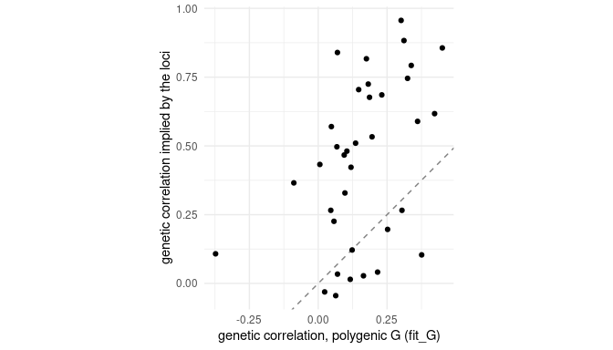

How much of the genetic covariance between traits do the mapped loci
explain? indri_locus_G() turns the additive and dominance
effects of loci into the covariance matrices they imply (Melo, Marroig
and Wolf 2019). This vignette applies it to the loci found in the
vignette Genome scans for many traits and compares the result
with the polygenic G of Estimating G for many
traits. It was precomputed.
The idea
A locus with allele frequency p (and
q = 1 - p), additive effects a and dominance
effects d across the traits contributes
2pq α α' to the additive covariance matrix G,
where α = a + (q - p) d is the average effect of an allele
substitution, and (2pq)² d d' to the dominance matrix
D. Loci in linkage disequilibrium add cross terms. Summing
over loci gives the G and D the loci
imply.
Setup
# The data every vignette uses: the nine weekly weight gains of the LG/SM F3
# mice, with the fixed effects of the original analyses.
library(indri)
traits <- lgsm_traits$growth
d <- lgsm_f3[lgsm_f3$ID %in% rownames(lgsm_genotypes$A), ]
d <- d[stats::complete.cases(d[c(traits, "LSB", "LSW")]), ]
Y <- as.matrix(d[traits])
rownames(Y) <- d$ID
X <- stats::model.matrix(~ SEX + factor(COHORT) + LSB + LSW, d)
rownames(X) <- d$ID
A <- lgsm_A[rownames(Y), rownames(Y)]
dosage <- lgsm_genotypes$A[rownames(Y), ] + 1
info <- transform(lgsm_markers, pos = cM)
cores <- as.integer(Sys.getenv("INDRI_VIGNETTE_CORES", "2"))
dir.create("cache", showWarnings = FALSE)
fit <- if (file.exists("cache/fit_sommer.rds")) readRDS("cache/fit_sommer.rds") else
fit_G(Y, X = X, A = A, engine = "sommer", cores = cores, seed = 1L,
progress = FALSE)
dom <- if (file.exists("cache/scan_dominance.rds")) readRDS("cache/scan_dominance.rds") else
indri_gwas(Y, dosage, fit = fit, A = A, X = X, snp_info = info,
dominance = TRUE)Choosing the loci
Markers in an F3 are strongly linked, so the effects of neighbouring markers mostly measure the same QTL. Taking every significant marker would count each QTL many times; one marker per peak, the strongest of each chromosome with a signal, avoids that:
threshold <- 0.05 / ncol(dosage)
best <- tapply(seq_along(dom$pvalues), info$chrom, function(i)
i[which.min(dom$pvalues[i])])
loci <- info$snp[best[dom$pvalues[best] <= threshold]]
loci
#> [1] "rs3683945" "rs8263587" "rs13477831" "rs6377710" "rs3722157"
#> [6] "rs3683030" "rs6410533" "rs13480678" "rs3661657" "rs3679276"
#> [11] "rs6352085"G and D from those loci
locus <- indri_locus_G(dom$a[loci, , drop = FALSE], dom$d[loci, , drop = FALSE], genotypes = dosage)
round(sqrt(diag(locus$G)), 3)
#> growth12 growth23 growth34 growth45 growth56 growth67 growth78 growth89
#> 0.140 0.250 0.427 0.380 0.249 0.234 0.147 0.177
#> growth910
#> 0.180
round(cov2cor(locus$G), 2)
#> growth12 growth23 growth34 growth45 growth56 growth67 growth78
#> growth12 1.00 0.23 0.43 0.03 0.10 0.03 0.01
#> growth23 0.23 1.00 0.75 0.11 0.50 0.37 0.27
#> growth34 0.43 0.75 1.00 0.51 0.72 0.57 0.47
#> growth45 0.03 0.11 0.51 1.00 0.86 0.62 0.53
#> growth56 0.10 0.50 0.72 0.86 1.00 0.79 0.70
#> growth67 0.03 0.37 0.57 0.62 0.79 1.00 0.96
#> growth78 0.01 0.27 0.47 0.53 0.70 0.96 1.00
#> growth89 0.20 0.42 0.48 0.33 0.59 0.88 0.84
#> growth910 -0.04 0.12 0.04 -0.03 0.27 0.68 0.69
#> growth89 growth910
#> growth12 0.20 -0.04
#> growth23 0.42 0.12
#> growth34 0.48 0.04
#> growth45 0.33 -0.03
#> growth56 0.59 0.27
#> growth67 0.88 0.68
#> growth78 0.84 0.69
#> growth89 1.00 0.82
#> growth910 0.82 1.00The allele frequencies and the linkage disequilibrium between the
chosen loci come from the genotypes (ld = TRUE, the
default), so loci on the same chromosome are not counted as
independent.
How much of the genetic variance of each trait do they account for?
share <- diag(locus$G) / diag(fit$G)
round(share, 2)
#> growth12 growth23 growth34 growth45 growth56 growth67 growth78 growth89
#> 0.07 0.08 0.28 0.14 0.15 0.15 0.08 0.10
#> growth910
#> 0.11The 11 loci account for 7 to 28% of each trait’s genetic variance:
the rest is spread over loci too small to map here. Their genetic
correlations are much stronger than the polygenic ones: a few large
loci, each affecting several weeks of growth, make a tightly integrated
G.
Comparing with the polygenic G
options(rgl.useNULL = TRUE)
suppressPackageStartupMessages(library(evolqg))
compare <- function(x, y) c(
random_skewers = RandomSkewers(x, y)[[1]],
krzanowski = unname(KrzCor(x, y, ret.dim = 4)),
correlation_of_entries = cor(cov2cor(x)[upper.tri(x)], cov2cor(y)[upper.tri(y)]))
round(rbind(`loci G vs polygenic G` = compare(locus$G, fit$G),
`loci D vs loci G` = compare(locus$D + diag(1e-8, nrow(locus$D)), locus$G)), 2)
#> random_skewers krzanowski correlation_of_entries
#> loci G vs polygenic G 0.79 0.75 0.43
#> loci D vs loci G 0.55 0.63 0.34Random skewers compares the responses of the two matrices to the same
random selection gradients; Krzanowski’s statistic the subspaces of
their first four principal components. Despite the difference in
strength, the loci’s G responds to selection much like the
polygenic one (random skewers 0.79): the mapped loci reproduce the main
directions of genetic covariance, if not its spread.
library(ggplot2)
entries <- data.frame(polygenic = cov2cor(fit$G)[upper.tri(fit$G)],
loci = cov2cor(locus$G)[upper.tri(locus$G)])
ggplot(entries, aes(polygenic, loci)) +
geom_abline(linetype = "dashed", colour = "grey50") +
geom_point() + coord_equal() +
labs(x = "genetic correlation, polygenic G (fit_G)",
y = "genetic correlation implied by the loci") +
theme_minimal()
Effects from other software
indri_locus_G() accepts effects from any mapping method,
as a matrix or a data frame with a column of marker names, with traits
in columns or (traits_in = "rows") in rows. Its help page
lists the conventions those effects must follow: the effect allele must
be the allele the genotypes count, d the heterozygote’s
deviation from the homozygote midpoint, and the units those of the
traits.
effects <- data.frame(marker = loci, dom$a[loci, , drop = FALSE]) # as another tool might give
other <- indri_locus_G(effects, genotypes = dosage)
all.equal(other$G, indri_locus_G(dom$a[loci, , drop = FALSE], genotypes = dosage)$G)
#> [1] TRUECaveats
- Effects from a single-marker scan are marginal and, at the markers chosen for being significant, biased upwards (the winner’s curse); a joint multi-locus model, as in the original analysis, gives better estimates.
- The loci found are those with large effects; many small ones make up
the rest of
G.
Reference
Melo, D., Marroig, G. and Wolf, J. B. (2019). Genomic perspective on multivariate variation, pleiotropy, and evolution. Journal of Heredity 110, 479-493. https://doi.org/10.1093/jhered/esz011